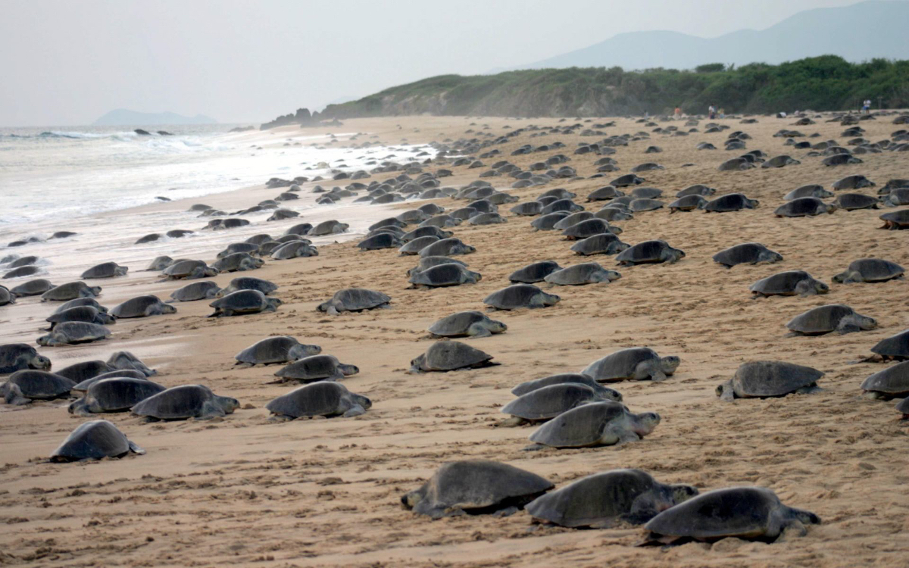

| TORTUGA | INICIO |

TORTUGA GOLFINA (Lepidochelys olivacea)
ANIDACIÓN MASIVA - VULNERABLE
TORTUGA PRIETA / NEGRA DEL PACÍFICO (Chelonia mydas agassizii)
ANIDACIÓN MASIVA - EN PELIGRO DE EXTINCIÓN
TORTUGA LAÚD (Dermochelys coriacea)
ANIDACIÓN MASIVA - EN PELIGRO CRÍTICO
TORTUGA CASQUITO / POCHITOQUE (Kinosternon integrum)
AGUA DULCE Y TERRESTRE - PREOCUPACIÓN MENOR
TORTUGA JICOTEA (Trachemys venusta)
AGUA DULCE - PREOCUPACIÓN MENOR
